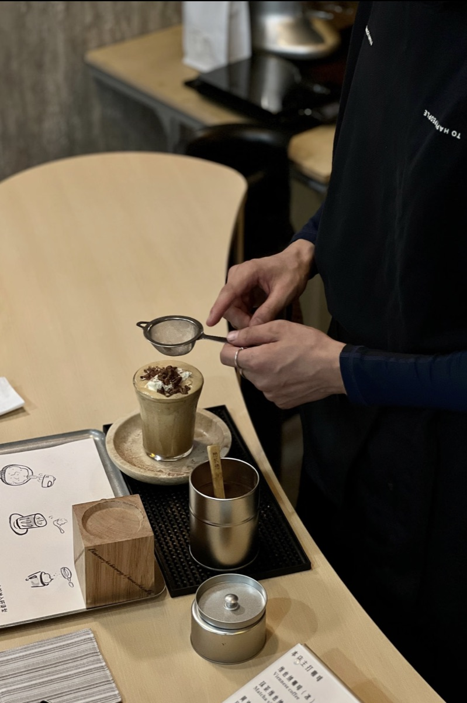
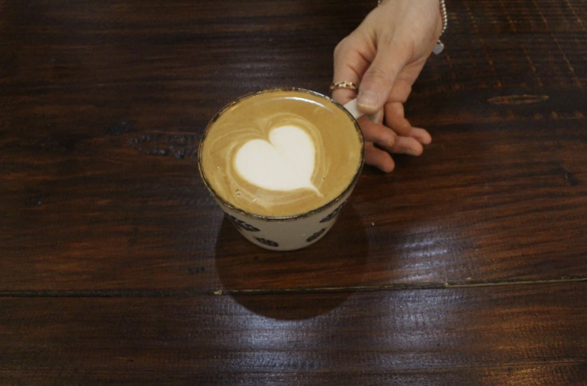
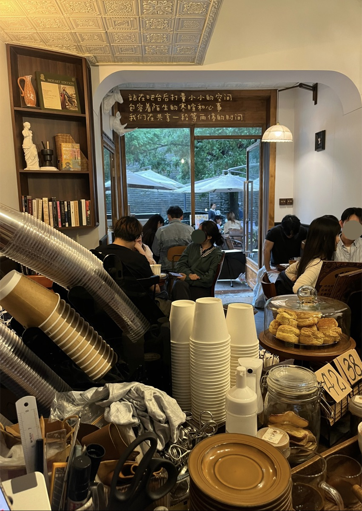
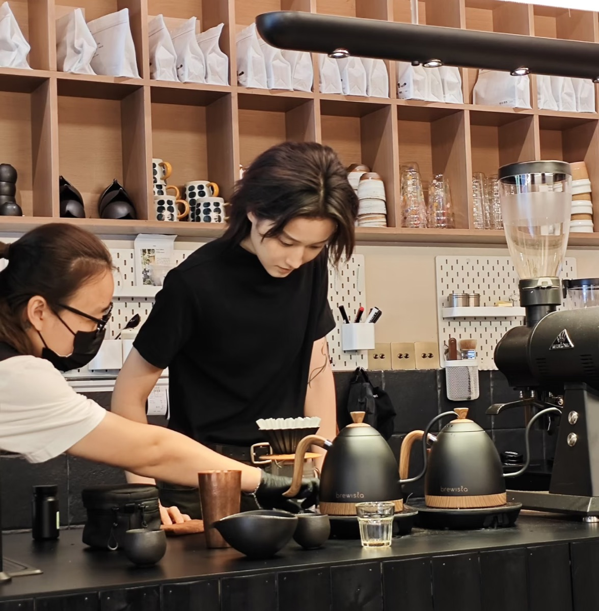
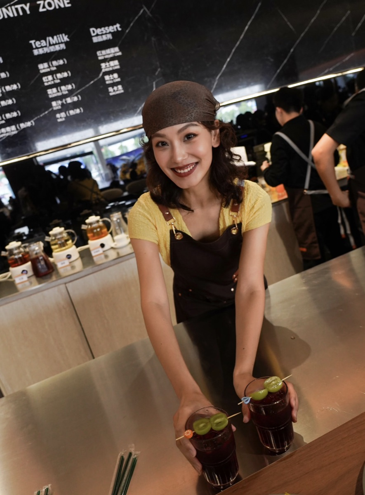
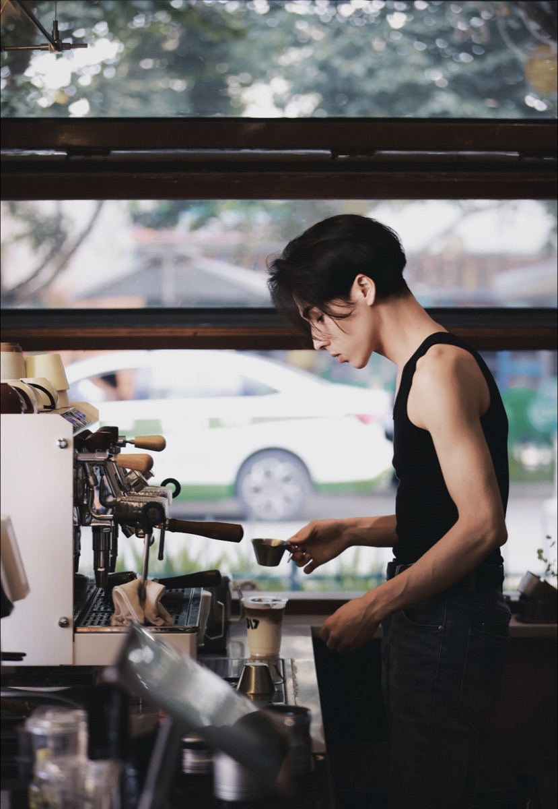
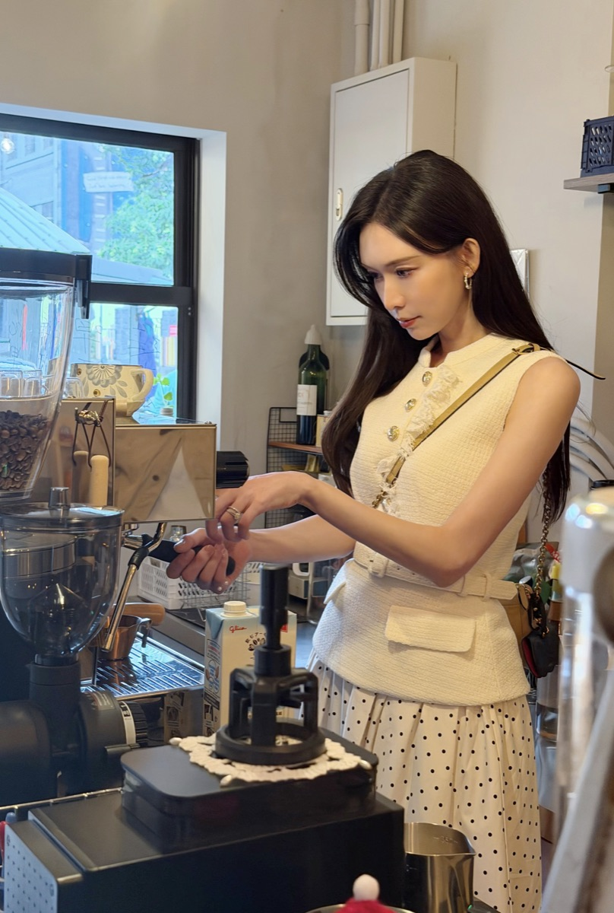

¥198
/人 · 主人陪同
已售 286 份
L2
安全
关于这段人生
早上7点到店，和阿树一起校准磨豆机，亲手做3杯手冲咖啡，接待第一批熟客，盘点当日流水，最后在吧台拍一张属于你的咖啡师照片。这不是体验课，是真的成为一天咖啡店主理人。
一天必做清单
共 8 项上午 · 咖啡修行
任务一：调机试萃今日第一杯浓缩用来调试，观察流速和油脂，调整参数直到完美
07:30任务二：手冲练习选一支单品豆，闷蒸、分段注水，练习水流稳定性，自己喝掉
08:30任务三：拉花出品拿铁、卡布、澳白，心形/树叶/郁金香轮番上阵，每杯都是一次考试
09:30任务四：创意特调试作开发今日限定款，可能是桂花拿铁/海盐焦糖/季节果咖，自己试喝命名
11:00下午 · 待客之道
任务五：拉花体验课教预约客人零基础拉花，拍下客人第一次拉出图案的惊喜瞬间
15:00任务六：手冲分享给客人做一壶手冲，边冲边聊这支豆子的产地故事和风味笔记
16:30任务七：杯测选豆新到3支生豆样品，杯测打分：干香、湿香、酸度、甜度、余韵，选出下周新菜单
17:30任务八：设备深度清洁拆洗冲煮头、反冲洗、清洁磨豆机、擦蒸汽棒
18:30出片清单
穿搭
建议暖色系毛衣/围裙，复古质感
机位
吧台窗口光影、拉花特写、门头照
光线
上午 8-10 点，侧逆光最佳
体验者出片
238 张来自真实体验者的打卡瞬间，点击可放大查看







+229
体验评分
真实感
4.8
好玩度
4.7
出片率
4.9
安全感
4.9
人生启发
4.6
安全等级 L2 · 公共空间体验，有主人全程陪同。平台已实名认证，支持行程备案。